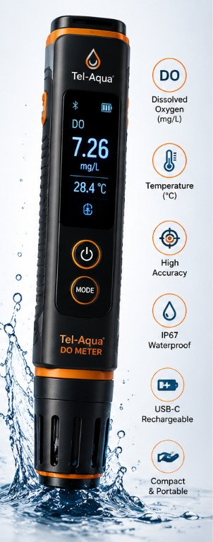
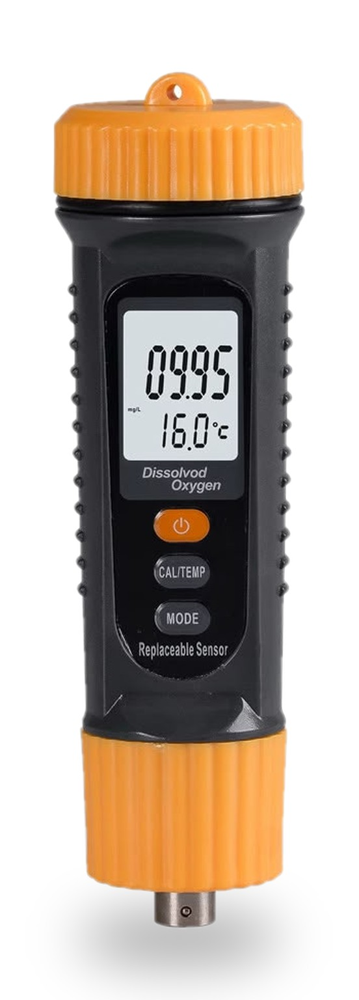
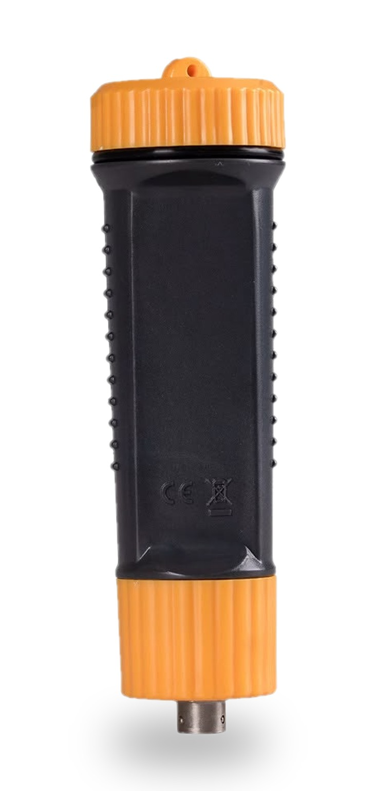
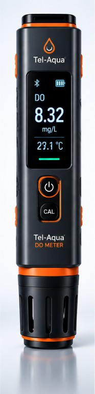

Know your oxygen.
Fast dissolved oxygen checks for shrimp and fish farmers.
From ₹1,500



You can't see oxygen in water. This meter can.
Your stock breathes the water.
Dissolved oxygen is one of the most important readings in any pond. A quick check tells you whether your shrimp and fish have enough of it.
-
Oxygen changes overnight
Levels often fall through the night and are lowest around dawn. Checking at the right time shows you the real picture.
-
Run aerators with confidence
Use readings to decide when aeration is needed, instead of guessing.
-
Healthier stock, better harvests
Stable oxygen supports feeding and growth. Catch problems before they turn into losses.
Simple to use. Made for the pond.
Everything you need for quick dissolved oxygen checks in the field.
Dissolved oxygen readings
Check DO levels in pond and tank water, right where you farm.
Clear digital display
Easy to read at a glance, even outdoors.

Portable design
Carry it from pond to pond for routine field checks.
Easy operation
Simple controls help you get a reading and decide faster.
Measure. Understand. Respond.
Measure
Dip the meter at the pond or tank and check the dissolved oxygen reading.
Understand
Compare readings across the day and between ponds to see how oxygen is changing.
Respond
Adjust aeration, feeding or water exchange based on what the readings show.
Take a closer look.
Specifications
- Measures
- Dissolved oxygen (DO)
- Display
- Digital
- Design
- Portable, handheld
- Use
- Shrimp & fish ponds, tanks
Detailed range and accuracy figures will be published soon. Need them now? Ask us on WhatsApp.
Know your oxygen. Protect your crop.
A simple dissolved oxygen meter at a farmer-friendly price.
₹1,500
What does the Tel-Aqua DO Meter measure?
It measures dissolved oxygen (DO): the amount of oxygen in your pond or tank water that shrimp and fish use to breathe.
When should I check dissolved oxygen?
Oxygen usually drops through the night and is often lowest around dawn. Many farmers check early in the morning and again in the evening, and more often in hot or cloudy weather.
Is it suitable for both shrimp and fish ponds?
Yes. The DO Meter is designed for routine water-quality checks in shrimp and fish ponds and tanks.
Can I order in bulk?
Yes. Message us on WhatsApp for bulk pricing for farm groups and shops.
What about replacement and warranty?
Read our Replacement & Warranty policy before you buy, or message us with any questions.